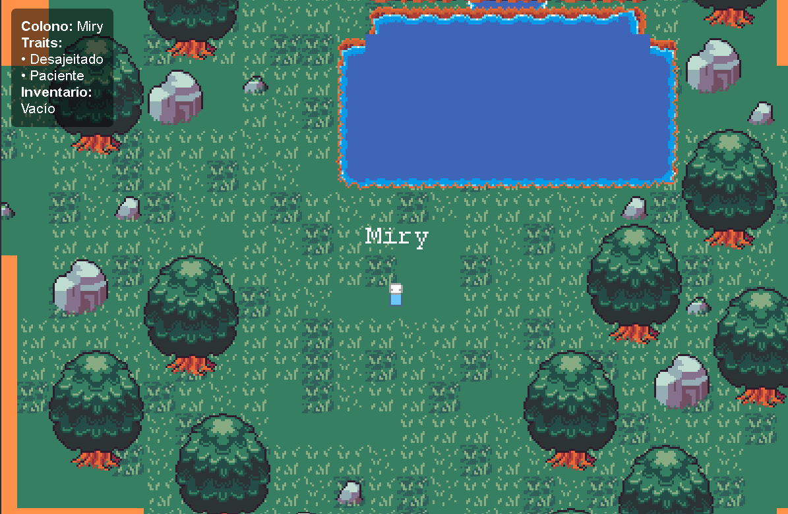
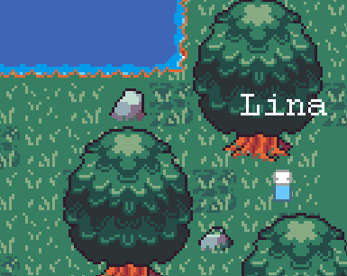
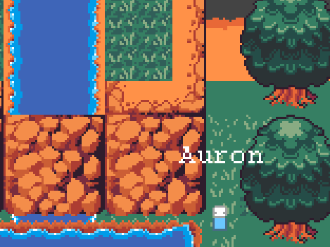

"Colony Frontier" é um jogo de simulação e estratégia pixel art onde você assume o papel de um comandante encarregado de estabelecer e gerenciar uma nova colônia humana em um planeta distante e desconhecido. Enfrente desafios ambientais, gerencie recursos, pesquise novas tecnologias e expanda sua colônia de um pequeno posto avançado para uma metrópole próspera.
Com uma estética retrô encantadora e mecânicas de jogo profundas, prepare-se para tomar decisões difíceis que moldarão o futuro de seus colonos. Cada planeta oferece biomas únicos, perigos e oportunidades.

Recursos Principais
Construção e Gestão
Projete e construa sua colônia com uma variedade de edifícios, desde moradias e fazendas até laboratórios de pesquisa avançada e defesas planetárias.
Exploração Planetária
Descubra os segredos do novo mundo, encontre recursos raros, formas de vida alienígenas e anomalias misteriosas que podem ajudar ou atrapalhar sua colônia.
Árvore Tecnológica
Desbloqueie novas tecnologias para melhorar a eficiência da sua colônia, descobrir novas estruturas e aprimorar as capacidades dos seus colonos.
Eventos Dinâmicos
Lide com eventos inesperados como tempestades de meteoros, doenças, ataques de fauna local ou até mesmo dilemas morais que testarão sua liderança.
Bastidores do Desenvolvimento
Uma olhada mais de perto em como "Colony Frontier" está sendo construído.
{/* Nova Pestaña */}
Tecnologias Utilizadas
Motor do Jogo & Gráficos:
Phaser 3: Um framework HTML5 rápido, gratuito e divertido para jogos de desktop e mobile. Ideal para pixel art e jogos 2D.
Aseprite: Usado para criar todos os sprites e animações pixel art.
Web & Ferramentas:
HTML5, CSS3, JavaScript: A base da landing page e da demo web.
Visual Studio Code: Editor de código principal.
Tiled: Criação do mapa.
Estamos focados em usar ferramentas que permitam um desenvolvimento ágil e que se alinhem com a estética pixel art do jogo.
Diário de Desenvolvimento
- Desenvolvimento criativo de Colonist Frontier
Comecei o desenvolvimento do protótipo focando na mecânica central: coleta de recurso (minério, energia), construção de estrutura básica (centro de comando, painel solar) e a interface do usuário inicial. A escolha pelo Phaser 3 já se mostra acertada pela facilidade de colocar elemento na tela e gerenciar o estado do jogo.
- Adição de sistema de inventário
A maior parte da lógica já funcionava; agora eu só tinha que adicionar alguns ajustes, como as mecânicas de inventário, coleta e tarefas. Este jogo ainda está em etapa Alfa, então não está nem na versão Beta para ser lançado. Mesmo assim, este é um pequeno adiantamento!
Mais atualizações em breve!
Conceito de Arte e Design Visual
A direção de arte de "Colony Frontier" busca uma estética pixel art nostálgica, mas com um toque moderno e detalhado. Me inspire em clássicos de simulação e ficção científica, visando criar um mundo que seja ao mesmo tempo charmoso e imersivo.


A paleta de cores é cuidadosamente selecionada para cada bioma e estrutura, garantindo clareza visual e uma identidade forte para o jogo.
Trechos de Código
Isso é uma parte do aleatorizador de colonos que criei.
que desafios e objetivos eu consegui encontrar e superar no caminho?
Programar em Js: O simples fato de tentar programar um jogo feito com JavaScript foi um completo desafio, uma vez que a maioria dos jogos é programada na linguagem C# e utiliza outro estilo de motor como Unity. Neste caso, eu utilizei o Phaser, conseguindo eliminar várias barreiras que o JS já me impunha.
Desafio pessoal: Entre os objetivos do projeto, eu queria buscar um desafio, algo diferente, e decidi começar a criar este jogo muito pequeno e primitivo do zero.
Estou empolgada para compartilhar mais progresso com vocês.
Junte-se à Comunidade
Sua opinião é importante! Participe das discussões, compartilhe suas ideias e ajude a moldar o futuro de "Colony Frontier".
"Colony Frontier" é um projeto apaixonado, nascido do meu amor por jogos de simulação, estratégia e a beleza da pixel art. Quero criar uma experiência que seja ao mesmo tempo relaxante e desafiadora.
Obrigado pelo seu interesse e apoio!
Mantenha-se Conectado
Tem perguntas, sugestões ou apenas quer dizer olá? Adoraríamos ouvir de você!